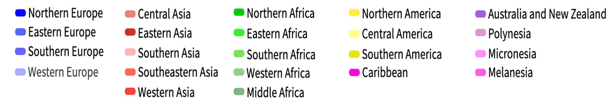

Chapter 4 Routes Impact Analysis
When flying and in troubles, no matters what it is, the altitude, the remaining fuel or even the radio communications. The first order of business is to keep the wings straight and level. Somehow, this is the strategy the airlines are applying. In front of a totally new situation, their objective is to stay afloat. And the only way to do it is preserving cash. To do so, they are erasing those routes or frequencies in which they will lose money or the law forbid to fly (CNBC 2020).
This is what is going to be analyzed in the following section. But before proceeding to the analysis of these adjustments, it is explained the methodology followed.
4.1 Methodology
Firstly, it has been necessary to elaborate the database. From the latter will be generated the graphics and animations that will allow the explanation of the pandemic. In order to generate the database then, it is a requisite to have access to the schedule adjustments of the airlines. This information is not usually published in open sources, thus it is necessary to pay. This information is extremely expensive, being totally out of the scope of this project. Even though, it has been found an alternative open source: RoutesOnline. This webpage has a section titled "AirlinesRoutes" in which they gather all the flight schedules adjustments from the airlines around the world, having a specific section for the coronavirus pandemic. RoutesOnline have been collecting these modifications since January 23 and will continue until the end of the pandemic. As they state in their webpage:
"Airlineroute is run by a team of one (with the exception of Routes Editorial Opinion and Live Blog Post), and due to extraordinary numbers of flight adjustments, Airlineroute may not be able to cover every carrier, but will report them as many as possible."
It is because of that, the database generated may be completed but cannot be ensured that lists all the modifications. Even though, and as it can be seen in the following pages, the database has resulted to satisfy the requirements.
Once elaborated the database, the project has proceeded with the representation of the data. There have been done several interactive representations to ease the understanding to make it as interactive as possible. The analysis of the representations is done after their presentation and on some occasions even complemented with other representations.
4.2 Database
The schedules adjustments posted on Routes Online required to be arranged and listed in an excel format. In the following Table is shown the database structure:
| REGION | COUNTRY | AIRLINE | FROM | TO | FROM (AIRPORT) | TO (AIRPORT) | TYPE OF ADJUSTMENT | FREQUENCIES (BEFORE) | FREQUENCY (AFTER) | PUBLICATION DATE | STARTING DATE | ENDING DATE |
|---|---|---|---|---|---|---|---|---|---|---|---|---|
| Eastern Asia | China | China Southern | Wuhan | Bangkok | 27200 | 28118 | 1 | 14 | 0 | 23/01/2020 | 23/01/2020 | 01/03/2020 |
| Eastern Asia | China | China Southern | Wuhan | Dubai | 27200 | 5235 | 2 | 3 | 1 | 23/01/2020 | 23/01/2020 | 01/03/2020 |
The database is structured in a way each row represents an adjustment in an airline's flight schedule. Following, are explained each of the blanks to be filled:
- Country: It states where the airline is based.
- Region: It classifies the previously mentioned country into a United Nations Statistics Division (UNSD) region.

Figure 4.1: The United Nations geoscheme
- Airiline: Name of the airline modifying its schedule.
- From: Origin of the route modified.
- To: Destination of the route modified.
- From (Airport): Identification code of the origin airport. This value references to another database listing all the airports with their corresponding locations and identification codes (See in See Appendix B).
- To (Airport): Identification code of the destination airport. This value references to another database listing all the airports with their corresponding locations and identification codes (See Appendix B).
Type of ajustment: Identification number
-1: Route Cancelled.
-2: Route with a reduction in frequencies.
-3: Route with an increase in frequencies.
-4: Route closed for reservation.
Frequencies (Before): Number of frequencies scheduled before the modification.
Frequencies (After): Number of frequencies scheduled after the modification.
Publication Date: Schedule adjustment notification date.
Starting Date: the first day the adjustment applies.
Ending Date: Last day the adjustment applies.
4.3 Analysis
As mentioned, the objective of the following section, and as a main part of the project, is to analyze the data collected.
4.3.1 The pandemic outbrake throughout the schedule adjustments
Firstly, it will be determined if the evolution of the COVID-19 pandemic can be represented throughout the evolution of the schedules adjustments. To do so, it will be used the nexy animation, in which are represented the affectations in the routes throughout the period studied.
The schedules modifications have been represented depending on its nature:
- In red are drawn the routes that have been cancelled by some airline.
- In orange are represented those routes seeing a reduction in their frequencies.
- In green represented those routes seeing an increase in their frequencies.
- In blue are plot the routes in which some airline have closed the reservation.
Below, in the left side, is attached the animation and in the right side can be seen its commentaries. 

Figure 4.2: Evolution of the affected routes by COVID-19
The presentation starts on January 22, being visible the effects of the pandemic just a day after. On January 23 the city of Wuhan is placed under lockdown and with this, the first cancellations arise. Until January 29, it can be seen the affectation takes place mainly at Eastern Asia in a radial form with the epicenter in Wuhan. Even though, some routes from Europe and North-America are being also altered. Some examples are those flown by British, Lufthansa or American airlines to China, from now on canceled.
On January 30, the WHO (World Health Organization) declares the COVID-19 a global emergency. China has now reported cases in all its provincial divisions and countries like India and Philippines announce their first positives. Others like France, Italy, Germany or South Korea report new cases. On the same day and the day after of the WHO declaration, it becomes obvious the repercussion the virus will have on the air transport across the globe. The routes affected increase drastically, being now more international rather than domestic. Even tough and as the routes show, the virus is in its majority in Eastern Asia, specifically in China.
As February begins, some countries respond to the global emergency declaration from WHO. A growing number of states start introducing temperature sensors and scanners in their airports. Others like Bahamas, Indonesia, Mauritius or Israel introduce quarantine measures for those arriving from China or suspected of having the virus. This measure will be followed by countries around the globe in the next days. These measures though, are rapidly not enough and the countries proceed to ban the flights from or to China. Some examples are Mauritius and Singapore (February 2), Israel (February 3), Indonesia and Turkey (February 5). Despite the efforts, the virus spread rapidly and more countries are infected during the month. The measures applied for China will be now applied for these.. Even though, this can not be explained through the schedules adjustments. As represented the modifications grow gradually and all around Eastern Asia, being not visible specific travel bans.
However, it is interesting to notice the changes in the nature of adjustments. With the closure of the city of Wuhan, the adjustments in both long-haul and short-haul routes were all cancellations. This behavior changes on January 31-February 1, when some short-haul and long-haul are closed for reservation. In the next pages, this will be analyzed with the aim to determine whether it is an anticipation move by airlines. Meanwhile, Asia short-hauls and China domestic routes adjustments are mainly cancellation or reductions in frequency.
February is also complicated for Europe, Italy will become the third most affected country by the end of the month. In response, some countries introduce travel restrictions for passengers who had been in Italy: Switzerland (February 13), Turkey (February 16), Kuwait (February 20) and Mauritius (February 24) among others. Even though, no major affectations compared to the rest of Europe are visible. It starts to be noticeable on February 28 when El Al (Israel Airlines) cancels all flights to Italy following limitations on travel imposed by the Health and Interior ministries. One day after, on February 29 Italy has more than 1 K confirmed cases and South Korea more than 3 K. This same day the Ministry of Health of Turkey announces the flight suspension to Italy and also to Iraq and South Korea, a measure that can be also seen in the map.
On March 1, the flag carrier of Italy (Alitalia) announces a frequency reduction to most of its domestic routes, clearly visible in the animation. During the next 6 days, other airlines will adjust their routes to Italy, even though, there are no significant changes. This changes rapidly on March 8. Italy, which until now had only 10 municipalities of the Lodi province under lockdown, decides to extend the quarantine to the entire region of Lombardy and 14 regions more of the north of the country. This provokes new affectations in domestic and international routes, mainly from/to Europe. Even though, some long-haul routes from North and South America involving Rome airport are also affected. This is likely to be an anticipation move by the airlines who may predict what is coming: Europe will become the new epicenter of the pandemic.
On March 9, there are no significant changes in the overall scenario. However, one of the major airlines around the world, Emirates Airlines files some service changes. It is suffering from low demand caused by the pandemic, deciding to cancel some short-haul routes and idling some A380 of its fleet. One day after, on March 10, Europe tinges red. Italy announces the quarantine of the entire country. Italy is now the second most hit country with more than 10 K cases. Airports, that until this day were not affected, show now canceled routes. It is also very important to notice Spain is also growing fast in cases: With more than 3 K is followed by France with more than 1.5k and Germany with 1.2 K.
On March 11, there are more than 125 K cases around the world and the WHO declares the COVID-19 a global pandemic. More routes to/from Italy are canceled mainly to/from other European countries and North America. This same day the president of The United States announces travel ban from Schengen Area to the US in bid to stem coronavirus. This measure will go into effect the Friday 13th of March3, generating a cloud of canceled routes over the Atlantic sea. From that day the chaos is taking hold of Europe and its countries start proclaiming the state of alarm and the total confinement for their citizens: Portugal on March 13 followed by Spain the day after. Austria on March 16 and France and Belgium on March 17. Of the last are Poland on March 20 and Greece and the UK on March 23. Until that day it is very complicated to detect the specific reactions since the adjustments are widespread around Europe.
In the north of the African continent, on March 14-March 15 is visible a significant increase of canceled routes in Algeria and Morocco respectively. The affectations in Algeria are explained by the service cancellation to France by the flag airline, Air Algerie. Meanwhile, in Morocco, the adjustments are done by Royal Air Maroc after the Ministry of Foreign Affairs announced that all international passenger flights to and from the country would be suspended.
Back to March 13, in the Arabian peninsula, it can be seen an increase in affected routes, concretely in Kuwait. The reason behind is the total closure of Kuwait International Airport. The government takes this measure with the objective to isolate the country from the rest of the world. Kuwait becomes the first country to close completely its main airport as a preventive measure with 72 positive cases. Two days after, on March 15, Saudi Arabia announces the travel ban from/to the country. The airlines' response to this measure is clearly visible, routes cancellations in Jeddah rise immediately.
In Russia, from March 13 and for an undetermined period of time, is limited the air traffic with Germany, Spain, France, and Italy. This measure is represented with an increase of canceled routes mainly in the Capital Moscow, and in St. Petersburg. Still in Easter Europe, the increase of adjustments is even more substantial on March 16. Russia introduces new limitations and Aeroflot, the flag carrier of the country, introduces new flight reductions in its schedule. In addition, this same day in Uzbekistan the air borders closure come into effect.
Jumping to southeastern Asia, on March 15, the city of Manila (Philippines) is placed under lockdown, generating a rise in cancellations. This measure is also imposed on the city of Cebu the next day, forcing the flag carrier of the county, Cebu Pacific, to cancel its routes to/from Cebu the March 17. This generates a new raise in cancellations the same day the country is declared under a state of calamity for a tentative period of six months.
On March 17, China is still the country more hit, with 81 K positive cases. Italy presents 30 K and is followed by Spain with 16 K, which has just surpassed Iran. Meanwhile, on the other side of the Atlantic sea, until now with minor affectations, the first measures start to arrive. In Peru, with 117 positive cases, come into effect the state of emergency announced the day before suspending all the international air transport of passengers. On March 18 Chile enacts the state of alarm and the day after, in the Dominican Republic, President Medina announces the suspension of inbound air traffic. However, this measure cannot be seen in the data collected. Otherwise, on March 23, Colombia forbids international flights and Panama closes its air borders, center America tinges red. By that day, in South America, Brazil is the most hit country with more than 1.5 K cases, followed by Ecuador with 850 and Chile 663. The most severe measures in Brazil will arrive on March 30 closing its borders, however, it is not visible any significant affectation.
Crossing again the Atlantic sea and back to March 19, Egypt closes their airports for international flights, being noticeable, especially in Cairo, the increase in adjustments. In Southeastern Asia, Air Asia Thailand announced the suspension of all its international flights, as well as, the reduction in frequencies for its domestic routes. Both measures come into effect on March 22, being visible in the airport of the country and mainly in the capital Bangkok.
On March 25 Australia ranks as the 17th most hit country, with 2.7 K cases. This day the country forbids its citizens to leave the country with only a few exceptions. This measure provokes a rise in schedule adjustments of those routes involving Australian airports. Three days after, on March 28th, the Malaysian low-costs AirAsia and AirAsia suspend their operations tingeing the skies of the country in red.
Finally, in the last stage of the animation, from March 28 to April 7, some routes that were canceled or reduced start reopening or showing increments in their frequencies, being especially noticeable on March 29.
In order to visualize the previous commented increases in late March, is attached the following graphic.

Figure 4.3: Net Frequencies Curve
As it was predicted, in late March and early April it is visible a rise in frequencies increased, being especially noticeable on March 29. Even though the same day it can be seen there is a cancellation of 8 K frequencies. This can be somehow confusing, it is for this reason in the next lines is explained the reason found.
The commercial scheduling consists of planning the destination, timings and frequencies to be flown by the airlines, being one of the key elements when defining their strategy. Commercial scheduling typically undergoes two major iterations per year: the summer and winter schedules. This year, in the northern hemisphere, the summer schedules go from March 29 to October 24. It is because of that, March 29 is an important date.
In consequence, and considering this analysis is done in the last months of the winter schedule 2020, there have been collected several airlines' summer schedules publications. These have been added to the database and classified as increases of frequencies, since there was neither the evidence that the airlines were flying those routes nor the frequencies detailed. This may explain the increase of frequencies visible in both, the map and in the Net Frequencies graphic. However, it is important to highlight the summer schedules published showed a huge reduction of flights compared to previous years. KLM for example introduced a schedule with 57 destinations, flying only the 10% of the normal number of flights (André Orban 2020). But how is justified the rise in cancellations?
During the month of March, several airlines published their summer schedules, most of them, with significantly fewer routes and frequencies. Despite its predictions of low demand, they could not forestall the pandemic evolution or the measures the governments will be taking. It is because of that, some of them have been almost adjusting their schedules on a daily basis.
During the month of March, the world's airlines could see how the outbreak in China began to ease and the government started to lift some restrictions (Sarah Giam 2020). Air carries reaction was the increase of their frequencies, especially those programmed for the summer schedule. This rapidly changed on March 26, after the Civil Aviation Administration of China (CAAC) decided to limit the number of international flights coming in and out of China. This was a measure taken to resolutely contain the increasing risks of imported COVID-19 cases. Under this new regulation, starting on March 29, Chinese airlines were only allowed to maintain one route per country and were forced to limit the number of flights to one per week. Foreign airlines were also forced to reduce their international routes to China to one per week and operate only one route into the country (Jackie Chen 2020). The airlines that were some days before adding frequencies are now forced to reduce them again.
This could explain the rise in canceled frequencies, but in addition, it has to be considered the schedule adjustments applied by airlines for other independent reasons (strategy, new demand predictions, ... ). And at least but not last, it must take into other governments' measures. An example is Oman, which suspends the international and domestic flights on March 29.
All these factors could explain the increase of frequencies in late March/ early Apri. However, there may be factors or considerations not taken into account due to the complexity of the analysis. One of them has been identified and it is explained in detail in the next section.

4.3.2 The air cargo phenomena
In the previous analysis, it has been seen that during the month of March and particularly when the global pandemic was declared almost every airline of the world had reduced its flights. With the travel restriction, border closures and quarantine periods, the demand for long-haul or international flights rapidly decreased, being quickly removed from airline schedules. The air cargo problem starts here.
Nearly every intercontinental passenger flight, in the belly hold, transports cargo. In fact, 45% of the world air cargo is carried in this method. With the flight cancellations, the overall air cargo capacity reduction was about 23% in middle march and around the 40% in late March.

Figure 4.4: Air Cargo volume and capacity during the months of March, April and May. Source: CLIVE Data Services
This is how the supply behaved, but what is the case of the demand? As commented during all this project, the economic impact induced for the COVID-19 has been devastating. In March, with almost all the world placed under lockdown, the economic forecast plunged. With the population under lockdown and the bad economic forecasts, consumers start buying less which generates a knock-on effect where the shipping is always affected. In addition, in many places the factories are shut down, cutting the supply chains. The scenario for air cargo was terrible. However, it resulted to be another perspective.
Since almost the beginning of COVID-19, it became clear the virus was highly infectious. With this, the necessity of Personal Protective Equipment (PPE) to treat safely the infected patients became essential. This is a material the hospitals have in stock, but not in the quantity needed to protect nearly every staff member for a long period.
By early March, the pandemic in China started to be controlled and with this, the industries started to inch back to life. It is not surprising that China resulted to be the main manufacturer of facial masks of the world. The most demanded equipment at that moment. Meanwhile, in Europe and the United States the COVID-19 was ramping up, forcing many hospitals to reuse masks. Even with this technique, they will rapidly need supply.
In logistics, there is nothing faster than air cargo. Thanks to this urgent demand for PPE and other medical supplies, air cargo demand dropped only a 15% in March 2020. On the other side, and remembering, air capacity dropped around 23%, generating and 8% gap, between supply and demand. Of course, the economy followed their laws and the last two weeks of March the air cargo rates from Shanghai to Europe jumped 50% above normal. In response, the big air cargo airlines that could rapidly increased their flights. However, the response of cargo airlines is limited to the number of pilots, mechanics and planes they have, being impossible to massively increase their operations in a short time. Here is where passenger airlines appear on the scene.
The passenger airlines had the extra capacity demanded. An average passenger airlines earn the 15-20% of its revenue through cargo. Considering that on average most of the world airlines' flights are domestic or short-haul flights, where little or zero cargo is transported, the revenue coming from cargo in long-haul flights is much higher. Moreover, the space before occupied by the baggage is now empty, airlines soon realized the gap in the market and the possibility of making profit through filling their passenger airplanes with cargo.
In addition, other circumstances stimulated this transformation. One the top of them is the Russia-Saudi Arabia oil price war. The two countries have long worked together limiting the oil output based on demand. But, after Russia refused to reduce their output, Saudi Arabia triggered the war by increasing production and slashing the prices (Wendover Productions 2020a).
Figure 4.5: Oil price evolution during the first quarter of 2020. Source: Refinitiv
Considering fuel is the main airlines' cost, the massive drop in its price drastically reduces the operation cost of a flight. This means that airlines need to earn a lot less than cargo airlines do normally to make a profit. With no passengers airlines did not take to long to innovate, and rapidly filled their passenger cabins with cargo, fastening the goods in the seats or even removing the seats. In fact, Airbus has offered a service to the airlines to transform the passenger cabins into an additional hold. This service is available for the A330 and A350 families and includes the administrative management with the European Aviation Safety Agency and the return to the passenger configuration (El confidencial 2020).

Figure 4.6: Austrian Airlines 777-200 being loaded with cargo in the passenger cabin. Source: Austrian Airlines
Figure 4.7: Swiss International Airlines cabin filled with boxes. Source: Swiss WorldCargo
All these conditions together made possible airlines could generate profits flying passenger planes without passengers. This opportunity was taken by several airlines around the world. For instance, Delta Airlines, Wizz, Air Canda but also small airlines got in on the game, for example, Air Greenland. The increment in frequencies seen in this study in late March and early April could be partially explained by this phenomenon. In order to verfy or deny the previous hypotesisi there have been listed all the airlines of the database that applied increases in late March/early April.
| AIRLINE | INCREASED FREQUENCIES FROM MARCH 15 - APRIL 7 | EVIDENCES OF FLYING CARGO FLIGHTS ON PASSENGER AIRCRAFTS |
|---|---|---|
| Alitalia | 776 | YES |
| Air Canada | 434 | YES |
| SAS | 380 | YES |
| Lufthansa | 336 | YES |
| Luxair | 322 | NO |
| British Airways | 296 | YES |
| KLM | 286 | NO |
| Finnair | 223 | YES |
| Aeroflot | 220 | NO |
| EVA Air | 210 | NO |
| Icelandair | 207 | YES |
| United Airlines | 204 | YES |
| Delta Airlines | 196 | YES |
| Malaysia Airlines | 195 | YES |
| Norwegian | 191 | NO |
| S7 Airlines | 191 | NO |
| Air China | 186 | YES |
| Air France | 185 | NO |
| Hawaiian Airlines | 184 | NO |
| Azul | 179 | NO |
| China Airlines | 173 | YES |
| Korean Air | 170 | YES |
| GOL | 169 | NO |
| Philippine Airlines | 167 | YES |
| Turkish Airlines | 138 | YES |
| Vueling | 110 | NO |
| ANA | 107 | NO |
| Loganair | 104 | NO |
| Iberia | 99 | YES |
| JAL | 96 | NO |
| Air Senegal | 93 | NO |
| Asiana Airlines | 92 | NO |
| Eurowings | 77 | NO |
| TAP Air Portugal | 75 | NO |
| Wizz Air | 69 | NO |
| Air New Zealand | 68 | YES |
| Aerolineas Argentinas | 63 | NO |
| Singapore Airlines | 59 | YES |
| Swiss International Air | 58 | YES |
| Ethiopian Airlines | 43 | YES |
| Cathay Pacific | 42 | YES |
| Etihad | 36 | YES |
| Garuda | 35 | NO |
| Gulf Air | 35 | NO |
| Qatar | 32 | YES |
| American Airlines | 28 | YES |
| Vietnam Airlines | 28 | NO |
| Thai Airways | 26 | NO |
| Air Antilles | 21 | NO |
| China Southern | 21 | YES |
| LATAM | 21 | YES |
| Cathay Dragon | 20 | YES |
| Royal Brunei | 17 | NO |
| Scoot | 17 | YES |
| Virgin Atlantic | 17 | YES |
| Emirates | 16 | YES |
| China Eastern | 15 | YES |
| Al Israel Airlines | 11 | NO |
| Egyptair | 10 | NO |
| Thai Lion Air | 10 | NO |
| Condor | 9 | NO |
| Croatia Airlines | 9 | NO |
| Cayman Airways | 8 | NO |
| Eastern Airways | 7 | NO |
| Xiamen Airlines | 7 | NO |
| Druk Air | 4 | NO |
| Juneyao Airlines | 4 | NO |
| Spring Airlines | 4 | YES |
| Atlantic Airways | 3 | NO |
| Bamboo Airways | 3 | NO |
| Hainan Airlines | 3 | NO |
| Philippine Air Asia | 3 | NO |
| Sichuan Airlines | 3 | NO |
| Air Austral | 2 | NO |
| Azerbaijan Airlines | 2 | NO |
| Fiji Airways | 2 | NO |
| Shanghai Airlines | 2 | NO |
| Air Calin | 1 | NO |
| Beijing Capital Airlines | 1 | NO |
| Shandong Airlines | 1 | NO |
As visible, there have been included the number of frequencies increased per airline. Also, each airline has been classified with a YES or NO considering whether, from March 15 to April 7, there is evidence that they did cargo flights with passenger airplanes or not. Some of the airlines listed with a "NO" introduced cargo flights with passenger airplanes at a later stage.
From the airlines listed, 32 out of 80 were flying cargo flights in their passenger airport in these dates. This represents that 4677 out of 7967, or the 59% could be increased for cargo reasons. Although, it cannot be ensured that the frequencies were added to transport cargo, this possibility, together with the argumentation given in the previous section, may explain the increase seen in the Figure 4.3.
4.3.3 Evolution of the frequencies cancelled per airline
In the following section is studied how the evolution of the erased frequencies per airline is related to the spreading of the pandemic. In order to do so, below are attached the following two illustrations:
Figure 4.8: Evolution of the cancelled frequencies per airline.
Figure 4.9: Evolution of the confirmed cases per country.

On the left side animation, it is represented the evolution of the frequencies canceled per airline and per day. Meanwhile, in the right graphic is shown the evolution of cases per country4 and per day. In both animations, the bars have been colored considering the United Nations Statistics Division (UNSD) regions. By this way, the classification of the airlines has been done taking into account the country where they are based in. For instance, Cathay Dragon has been categorized as "Eastern Asia", since it is a Hong Kong-based airline.
As represented, on January 22, in China, there were already more than 500 positive cases. In addition, Thailand, Japan, South Korea, Taiwan and the United States reported their first cases. During the next 30 days, it is visible how the virus spreads rapidly inside China. In this stage, the airlines canceling more frequencies are all based in Asia. There few exceptions like Lufthansa, AirFrance and America's 'Big Three'5. All these have long-haul routes to China, which are forced to cancel as the coronavirus spreads and fears mount (Slotnick, D. 2020). From February 19, is illustrated the virus spreading acceleration outside China. In just 5 five days South Korea has 920 more confirmed cases, Italy 258, Japan 67 and Iran 71. Until March 9, the rise of cases in South Korea is followed by an increase of canceled frequencies by Korean Air, which even ranks as the 4th airline with more frequencies canceled.
In late February and early March, the virus is also spreading fiercely in Italy and Iran, surpassing South Korea in cases on March 10. With this, first color changes start arriving in the airlines graphic. On March 7, 3 European airlines appear in the top 20: Lufthansa, Eurowings and Alitalia. On 8 March, when the North of Italy is placed under quarantine Alitalia has already 736 routes canceled. Two days after, the Italian government places all the country under lockdown, and the European airline's cancellations rise again. The British low-cost airline, EasyJet, cancels more than 1 K routes from/to Italy to/from Europe. On March 11, it is declared the global pandemic and Ryanair cancels more than 2 K frequencies. Trump announces the travel ban from Europe from March 13. On March 13, Americas' 'Big Three' cancel mora than 800 frequencies from Europe. In the next days, Europe becomes the epicenter of the pandemic and on March 16, 6 out of the 10 most-affected countries are European. An example is Spain, where confirmed cases more than triple in just 6 days. One of the major changes in the airlines' illustration arrives on March 14, when Lufthansa Group (Lufthansa, Eurowings, SWISS and Brussels Airlines) cancels more than 5 K frequencies. By March 20, the group will be grounding 700 out of 763 aircraft, flying only the 5% of its program (Eurocontrol 2020).
Meanwhile, in the evolution of the confirmed cases, on March 20 China is still in the first place. Nevertheless, it seems the country has managed to flatten the curve. In the second place is located Italy, where each day is added 2 K cases. Followed by Spain, also confirming around 2 K new cases per day.
In the next 7 days, a lot of airlines fill new cancellations. It is important to highlight the emerge of South American airlines in the lower part of the ranking. South America will be the last region to be hit by the virus and is in mid/late March when the cancellations start taking place. This is also visible in the right graphic, from March 21 to March 31, the cases in Brazil raises from 1 K to 6 K
However, the virus is now spreading more aggressively in Northern America, the United States, which had 3 K positives on March 15, has more than 100 K confirmed cases and ranks as the most hit country on March 27. Even though, the European and Asian airlines are still the ones that have canceled more frequencies.
During the last stage of this study, from March 27 until April 7, the number of cases keeps increasing. In Germany for example, on April 4, the reported cases surpassed those reported by China. In the United States the cases more than triple in just 10 days.
The animations conclude on April 7 showing that 6 out of the 10 most hit countries are European. Summing up more than 450 K confirmed cases together. Meanwhile, the United States is now the most hit country surpassing the 360 K cases and China is in the 5th position with 82 K positives. In the left graphic, there are no major changes apart from another increase by the Lufthansa Group.
Regarding the air carriers, the European airlines are the ones that have reduced more frequencies. Lufthansa is in the first position and all the members of its group are in the top 10. The low-cost airline Ryanair is also in this ranking, with more than 2 K frequencies canceled. It is important to notice that there is none Northen American airline in the top 10. American Airlines and United Airlines rank as the 19th and the 20th respectively, explained because the evaluated period of time concludes in early April when United Stated airlines were not still affected by domestic flights reduction.
Finally, there are 5 Asian airlines in the top 10. Two of them from the Persian Gulf (Western Asia): Emirates Airlines and Qatar Airway, two from the Southeastern Asia: Air Asia and Cebu Pacific and one from the Eastern Asia: Air China.
In conclusion, it has been found a direct relationship between the number of cases per region and the airlines canceling more frequencies. It has been visible that in late January and early March, when the most affected region was Asia, the airlines reducing more frequencies were based in this region. Moreover, when South Korea raised in positives the flag carrier of the country also increased its cancellations. This same behavior has been followed by Italy and its main airline Alitalia. Nevertheless, after the outbreak in Italy and with the virus spreading Europe no more direct relationships between countries and flag-carriers have been detected. The virus is no more focused on one country, being a reality around Europe and with all countries applying measures most of the European carriers are being affected. Moreover, the European market is shared among several European airlines, difficulting, even more, the visualization of the countries' affectation through their flag-carriers. This is likely to be the reason for not seeing any specific behavior, although, the relationship airline-region is still present.
It has been also noticeable the North-American airlines' reaction to the travel ban from Europe. It is important to highlight, at the moment the decision was taken were around 1 K confirmed cases in the States. So this is clearly a reaction to a government measure rather than the number of cases.
In any case, even in Asia and Europe, where it has been seen a direct relationship between the cases per country and the number of canceled frequencies by the flag-carrier; it cannot be ensured that the airlines where reacting to the value of the confirmed cases. There are more likely to be reactions in front of government measures and drops in demand, rather than the number of COVID-19 positives. This can be corroborated with the analysis done in the previous section where are explained some government measures and is seen the airlines' reaction. However, there is a direct relationship between the number of cases and the demand, which at the same time is related to the reductions of frequencies. It is because of that, it cannot be obtained a general conclusion. It would be necessary to analyze every airline adjustment considering the moment the decision was taken, their forecasts in demand and the government measures applied at that moment.4.3.4 Affected Airlines
In the next section are presented the airlines appearing in the study. This means the air carriers followingly presented have applied some adjustments in their schedules that have been collected in the database. This does not mean other airlines have not introduced adjustments in their schedules but these have not been listed in AirlineRoutes. Besides, it's likely the database created does not gather all the adjustments of the airlines listed.

Figure 4.10: List of Airlines Affected
For each airline is detailed the next information:
Logo: Logotype of the airline.
Country: Country where the airline is based in.
Region: It classifies the previously mentioned country into a United Nations StatisticsDivision (UNSD) region
No of the potential Frequencies: It represents the sum of the frequencies scheduled from January 23 to April 7 by the airline. It does not necesseraly represents the total of the frequencies flown by the airline. It is the sum of the frequencies planned for all the routes adjusted.
Frequencies Cancelled VS Frequencies Increased: It represents the sum of the frequencies cancelled against the sum of the frequencies increased from January 23 to April 7 by the airline.
Affectation: It is the porcentage of the routes cancelled for every houndred planned.
Before commenting the results, in the top left of the Figure there is a browser that allows to search the desired airline.
The main objective of this section is to identify those airlines present in the database but whose adjustments have not been completely collected. This can be ensured by analysing the Frequencies Cancelled VS Increased color bar. It is unlikely that during the period of the study, some airlines have increased more frequencies that cancelled. This is a clear indication of lack of information. Having increased more frequencies than cancelled involves having a low affectation grade. It is because of that, scrolling down the list in the bottom can be found the airlines in question. For example are: Luxair, Norwegian, Azul, GOL, Alaska, Vueling, Loganair, ...
Taking Norwegian, for instance, through the database represents that the airline has added 191 frequencies and that it has not cancelled any frequency. However, as states in its webpage the airline, by March 16, cancelled 85% of its flights. Another clear example, is Vueling. In the database generated the airline lists with an affectation of 0%, increasing 110 frequencies and cancelling none. Nevertheless, by early March the airline already cancelled 22 routes from Barcelona (Hipertextual 2020).
It is also interesting to comment the case of Neos Airline. As it can be seen, the airline shows 4 frequencies adjusted in this period but neither has been cancelled nor increased. The adjustments gathered of Neos have been all "Close for reservation". However, in its webpage is listed all the destinations with flights suspended. This proofs the difficulty of collecting all the adjustments. Additionally, some airlines are resistent to publish the routes affected and the exact number of frequencies adjusted, which makes it even more complicated.
On the other side, some airlines listing only few No of frequencies planned. These carriers either may be small or only few adjustments have been collected. Considering the particularly low value in some cases, it is more likely to be a lack of adjustments.

To continue, there are presented the following two Figures:
As shown in the left circle, 114 of the airlines listed are from Asia representing 48.8% of the total. The 25.2% are from Europe summing up 62 airlines. Northern America airlines represents the 5.3%, Southern America and the Caribbean the 6.1%, Africa the 7.8% and Oceania the 6.8%. This is the result expected since the period selected gathers the evolution of the pandemic mainly in Asia and Europe. There have indeed been seen some measures applied in the Americas and the airlines' response, however, it was in mid/late April when the Americas were most hit by COVID-19 and the most strict air travel measures were supposed to be applied. The number of airlines introducing adjustments does not necessarily mean, more frequencies canceled. It is because of that, it is necessary to check the right graphic:
As visible, Western Europe has been the region in which it has been canceled the major number of frequencies. Representing the 26% of the total. The reason behind is the fact that in the database is listed the massive cut of Lufthansa Group, who have been flying only the 5% of its usual program. This does not mean that other airlines did not also apply a massive cut but it may not be listed. This can generate, the noticeable difference between Western Europe and the other regions.
Western Europe is followed by Eastern, Southeastern and Western Asia that together sum up to 46% of the cancellations. This is also an expected result, considering the period studied gathers the entire evolution of most of the countries in Asia. Northern America represents almost the 7% of the cancellation since it has been studied the travel ban from Europe. Even though, and as it has been commented, it expected this value would strongly increase if the period was extended until late April. The other regions of Europe (Northern, Eastern and Southern Europe) represent the 12% of the total cancellations, almost a quarter part of Western Europe. This also indicates the database is incomplete since it is known that airlines of these regions have also applied important cuts in their Schedules. Are some examples: The Irish low-cost, Ryanair, grounded its entire fleet from March 24 to April 9. The Spanish long-haul low-cost airline, LEVEL grounded also its entire fleet on March 20. Or the English easyJet, which also grounded its fleet on March 256.
4.3.5 Duration and anticipation of the adjustements
In this section will be studied the duration and the anticipation of the adjustments applied by the airlines.
Firstly, is analysed how the duration of the adjustments has evolved through the period. In order to compute so it has been calc
4.3.6 Airlines' Strategy
vnflevnfklw
The United Kingdom and Ireland were initially exempt but will be also included on March 17.↩
The data required to design the graphic has been obtained from Roser, M. & Ritchie, H. (2020) .↩
American Airlines, Delta Airlines and United Airlines.↩
This information has been obtained from (Jason Rabinowitz 2020), the percentages cited are for time-periods enclosed in the period of this study.↩